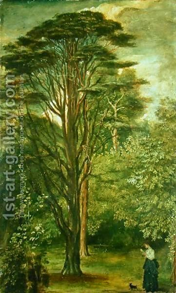

Yevamot 49 - How Manasseh killed Isaiah
Rabbi Akiva has an especially strict opinion about a mamzer: any time the union is forbidden by a mere "don't do it" commandment, the child is already a mamzer. What is his logic? The Torah said, " A man shall not uncover the robe of his father ," and it was talking about a woman with whom his father was intimate out of wedlock (mere "don't do it" for the son), and yet next is the phrase about a mamzer.
However, Shimon Hatimni says that the transgression must be more severe, one that deserves death at the hands of Heaven, and this is the accepted opinion. Rabbi Yehoshua says that to produce a mamzer, the union must carry an even stronger prohibition, one that warrants death by court judgment.
There was an old scroll in Jerusalem which supported Rabbi Yehoshua. The scroll also told that Manasseh (an idolatrous king) killed the prophet Isaiah (who was his grandfather). Here is how it happened. First, Manasseh judged Isaiah as a false prophet. He said, " You claim to have seen God , but Moses your teacher said that one cannot see God and live." Manasseh found two more such contradictions. Isaiah had explanations to all of them, but decided not to say them. He judged that Manasseh would not accept them, but act in cold blood, and preferred to keep him ignorant and erring. Instead, Isaiah said the special name of God and was absorbed into a cedar tree. His tzitzit were visible however, and the servants of Manasseh began to chop the cedar. When they came to Isaiah's mouth, he died. Why did he deserve it? For the phrase that he said earlier, "I live among people of impure mouths." One should not speak bad of the community of Israel.
Art: The Cedar Tree by George Frederick Watts